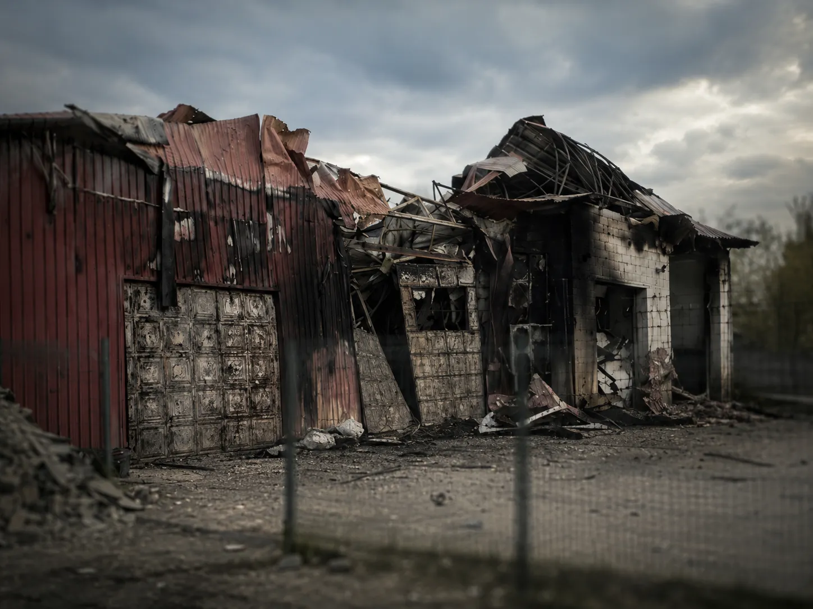
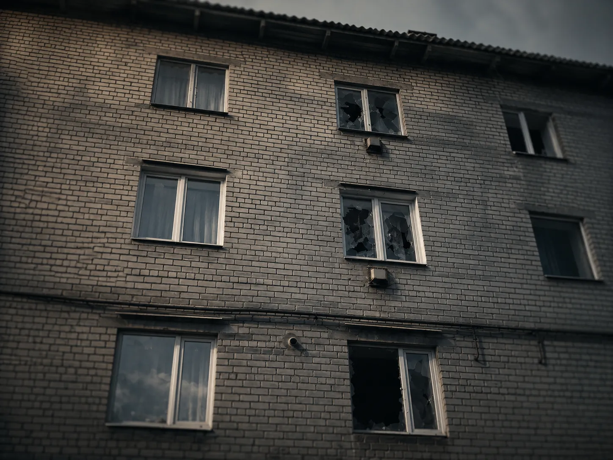

Кременная в мае: дроны остались рядом
Дата:

В апреле мы писали, что в Кременной стало заметно больше беспилотников. Тогда жители все чаще говорили не только о фронте, но и о том, что происходит прямо над городом.
Май показал, что ситуация принципиально не изменилась. Дроны продолжают появляться над Кременной и дорогами вокруг нее. Бывают дни спокойнее, бывают тяжелее, но сообщения о беспилотниках повторяются регулярно.
При этом город не остановился. Люди работают, занимаются хозяйством, ездят по делам, ждут свет, обсуждают восстановление и продолжают жить настолько обычной жизнью, насколько это сейчас возможно.
Ранее я уже подробно писал о ситуации в городе в конце марта и апреле. Тот материал можно прочитать здесь: "Кременная под дронами: как изменилась жизнь в городе" .
Что изменилось после апреля
Главное изменение за последние недели не в одном отдельном эпизоде. Важнее другое: беспилотники остались частью повседневной обстановки.
Местные описывают ситуацию как волновую. Бывает относительно спокойно, затем снова слышны дроны, стрельба по воздушным целям, взрывы или сообщения о падении обломков. В отдельные дни говорят о нескольких эпизодах за сутки.
"Вообще не постоянно, за день от трех до пяти, как мне кажется. Зачастую ближе к вечеру."
Эта фраза хорошо передает нынешнюю картину: не непрерывный кошмар без пауз, но и не нормальная мирная жизнь.
Дроны, дороги и транспорт
Одна из тем, которая постоянно появляется в сообщениях местных жителей - дороги и передвижение. Чаще всего упоминаются сама Кременная, район Первой шахты, трасса в сторону Сватово и открытые участки вокруг города.
В мае сообщалось об эпизоде возле пассажирского автобуса. По словам местных, один беспилотник был сбит, второй упал или сдетонировал рядом с транспортом. Предварительно, люди в автобусе остались живы.
После таких сообщений многие стараются лишний раз не задерживаться на открытых местах и без необходимости не выезжать. Это не паника, а обычная осторожность для города, где беспилотники слышат регулярно.
Хитрый рынок и жилой сектор
В ночь с 7 на 8 мая местные сообщали об ударе в районе Хитрого рынка. По словам жителей, после этого были повреждения и пожар на торговых объектах. Данных о пострадавших по этому эпизоду на момент публикации не было.
Отдельно в мае был зафиксирован случай с ранением 16-летнего подростка. Речь шла об атаке на жилой сектор Кременной. Подростка доставили в больницу с минно-взрывной травмой и осколочными ранениями. Позже сообщалось, что угрозы жизни нет.
По словам местных, эпизод произошел в районе Первой шахты. Дрон был сбит или поражен, после чего упал возле дома в момент, когда подросток находился у двери.

Свет, связь и городская жизнь
15 мая жители сообщили, что ночью в городе пропало электроснабжение. Также поступали сообщения о возможном повреждении энергетической инфраструктуры. Точные данные по месту и характеру повреждений тогда требовали уточнения.
Связь у части жителей сохранялась за счет интернета в госзаведениях и проводного телефона. Коммунальные службы в отдельные дни продолжали работать. Люди передавали друг другу информацию и пытались понять, что произошло.
В разговорах местных рядом часто оказываются совсем разные вещи: беспилотники, работа, свет, огороды, небольшие заказы и обычные бытовые вопросы. Сейчас все это существует одновременно.
Праздничные дни прошли без массовых гуляний
Майские праздники в городе прошли без массовых гуляний. Многие отмечали День Победы дома. По сообщениям местных, в праздничные дни сильного всплеска по Кременной не было, но дроны все равно появлялись.
Более спокойные дни пока не меняют общей картины. Обстановка может становиться тише, но сообщения о беспилотниках продолжают возвращаться.
Что говорят жители
В сообщениях из города чаще всего нет громких слов. Люди пишут коротко: дроны летают, коммуникации работают, ночью был дождь, кто-то прячется при жужжании, кто-то остается в огороде даже когда дрон кружит над районом.
Один из жителей сказал об этом прямо:
"Кто этого не видел, тот никогда не поймет."
Эта фраза хорошо объясняет разницу между теми, кто читает обстановку со стороны, и теми, кто живет внутри нее каждый день.
Что дальше
Май пока не дал ощущения, что Кременной стало спокойнее. Но и говорить, что город остановился, тоже неправильно.
Люди продолжают жить, работать и заниматься своими делами. Просто теперь многое зависит от того, что происходит в небе.
Кременная пока не выдохнула. Но она по-прежнему живет...